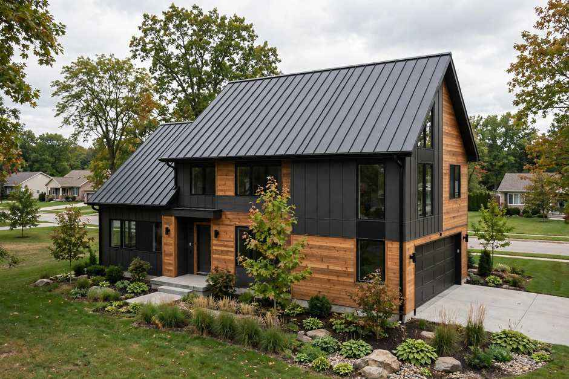

Metal roofing vs shingle roofing: which is better for Des Plaines
Metal and asphalt shingles suit different roofs, pitches, and budgets. This guide compares guide costs, attributed lifespans, and weather behavior — with no winner declared.

“Which is better?” has no general answer: metal and asphalt shingles suit different pitches, structures, budgets, and priorities, and the guides disagree about cost. This guide compares the two on weather behavior, cost ranges, attributed lifespans, and installation differences — and declares no winner, because the right choice depends on the individual roof.
Every cost and lifespan figure below is an attributed third-party guide figure. None is this business’s price, and no lifespan figure is a warranty or a guarantee.
The short answer for Des Plaines homeowners
In short: asphalt shingles cost less upfront in every guide, and metal costs more upfront with longer guide lifespans. Metal sheds snow readily and handles hail by denting rather than bruising; asphalt is the common default, simpler to repair in kind, and more vulnerable to hail bruising and granule loss. Neither is “best” in general — pitch, structure, budget, and how long the owner plans to stay all change the answer.
The rest of this guide unpacks that summary with attributed figures, so the comparison can be checked rather than taken on trust.
How Des Plaines weather punishes a roof
At Chicago O’Hare, the nearest official station, the 1991–2020 normals show 38.4 inches of snowfall a year, 37.86 inches of precipitation, about 121 freezing nights, and about 43 all-day-subfreezing days. Freeze–thaw cycling stresses fasteners, seals, and joints on any material.
Severe weather runs broadly April through September, peaking June–July (NWS Chicago forecast-area climatology, 23 counties). Hail and wind are the roofing concerns: the NWS severe-thunderstorm hail threshold is 1 inch, and wind lifts shingles and ridge caps. Ice dams form through the attic-heat mechanism in winter, and no covering material alone prevents them.
Most Des Plaines homes were built before 1980 (median year built 1966, ACS 2019–2023). Era-typical patterns — postwar ranches and split-levels with low-to-moderate pitch hips and gables, Capes with steep front gables and dormers — are expectations to check on site, never facts about an individual house.
Metal roofing in Des Plaines: what you actually get
“Metal roofing” covers more than one product. Concealed-fastener standing seam and exposed-fastener panels behave differently — thermal movement, fastener exposure, and installation specialism all differ — and they must not be presented as equivalents.
Metal roof benefits Des Plaines IL homeowners notice first
Snow shedding is the most cited benefit in guides: smooth metal releases snow more readily than granular asphalt. Hail dents metal rather than bruising a mat, which changes how damage shows and is assessed. Guide lifespans are the longest of the two materials compared here (see below). Fire and impact-resistance claims for specific products depend on the product and rating — ask, and check with the insurer, rather than assuming a discount or a rating.
The trade-offs
Metal costs more upfront in every guide, installation is specialist work, and repairs need matching panels and detailing. Noise and energy claims appear in marketing without a consistent sourced basis in the guides read, and are not repeated here. Standing seam and exposed-fastener systems must be compared as different products, not as “metal” in general.
Shingle roofing in Des Plaines: what you actually get
Asphalt shingles — 3-tab and architectural (dimensional) — are the material most Des Plaines roofs carry and most cost guides describe. Architectural shingles are thicker and heavier than 3-tab, with different guide lifespans.
Shingle roof benefits Des Plaines
Lower upfront cost in every guide, wide installer familiarity, and repair in kind: damaged sections can often be replaced with matching shingles. Architectural profiles offer a dimensional look and longer guide lifespans than 3-tab. Shingles handle the pitch range of most Des Plaines homes, within the guide’s pitch limits (tab shingles not below 2:12).
The trade-offs
Shorter guide lifespans than metal, vulnerability to hail bruising and granule loss, and aging from heat and UV. Curling, cracking, and granule loss are the visible age signs — see the shingle guide on this blog. Impact-resistant (Class 4) shingles are a product attribute discussed in guides; no Des Plaines impact-resistance mandate was found, and any insurance-discount claim needs checking with the insurer.
Metal roof vs shingles cost in Des Plaines
Guide figures conflict and describe different scopes. They are shown as published, with sources and dates — never averaged, and none is this business’s price:
- Metal, installed: $9–$18 per sq ft; $18,000–$38,000 full install; standing seam (2,000 sq ft) $22,000–$38,000 (Modernize, Illinois, August 2026). Standing seam $11.00–$17.50 per sq ft (XL 2026). Residential metal $12–$20 per sq ft (Green Attic, January 2026). ~$5–$16 per sq ft, corrugated $5–$12, standing seam $9–$16 (Holda, northwest suburbs, 2026) — conflicting with the higher ranges.
- Architectural asphalt, installed: $5.00–$7.50 per sq ft (XL); $5–$11 (Modernize); $4–$6 (Holda); $8–$12 (Chicago Roofing Team — conflicts).
- 3-tab asphalt: $4.00–$5.50 (XL); $3–$11 all asphalt (Angi Chicago, July 2026).
- Totals, asphalt: Angi Chicago most $6,049–$14,515, average $10,185 (updated July 2026); Modernize Illinois $9,500–$23,000, average $15,200 (August 2026); SmartRoofingCalculator Chicago $15,045–$21,830 for a 25-square architectural roof including tear-off (November 2026). The Angi average sits well below modelled totals because methods differ — customer surveys across all job sizes vs modelled full tear-off on a defined roof. Neither is “wrong”; neither is the Des Plaines price.
Per-square-foot, per-square, and total figures are not interchangeable, and guides variously include or exclude tear-off, disposal, underlayment, flashing, ventilation, permits, and decking. Only a written on-site estimate settles a price. See the metal roofing and roof replacement pages for the related topics.
Which roof lasts longer in Des Plaines?
On guide lifespans alone, metal outlasts asphalt in every guide — but guide lifespans are attributed ranges, not warranties, and they assume installation and maintenance conditions the guides do not fully specify:
- Metal: 40–70 years (most guides); 30–50+ years (Holda).
- Architectural asphalt: 20–30 years (XL guide).
- 3-tab asphalt: 12–20 years (XL guide).
What actually determines life on a Des Plaines roof is the same for both materials: installation quality, attic ventilation, hail and wind exposure, and maintenance. A well-installed asphalt roof outlasts a poorly installed metal one. Lifespan comparisons should therefore be read alongside installation and system questions — underlayment, ice barrier, flashing, and ventilation — not as standalone promises.
Common mistakes in the metal-vs-shingle decision
- Comparing headline prices across different scopes. Tear-off, underlayment, flashing, and ventilation inclusions differ between guides. Compare written scopes.
- Treating “metal” as one product. Standing seam and exposed-fastener panels differ in fastening, thermal movement, and cost. Compare specific systems.
- Treating a guide lifespan as a warranty. Lifespans are attributed ranges. Warranty terms are a separate question for the business.
- Assuming an insurance discount. Impact-resistance and metal-roof discount claims always need checking with the insurer. No discount is promised here.
- Ignoring the system. Ice barrier, flashing, and ventilation matter as much as the covering material for Des Plaines winters.
When to call a professional
The comparison is best settled after an inspection, when pitch, layers, deck condition, and ventilation are known. For inspection scope, see the roof inspection page, and call during listed hours to discuss which materials the business works with.
Frequently Asked Questions
Is metal roofing better than shingles in Des Plaines?
No winner is declared here. Metal costs more upfront with longer guide lifespans and ready snow shedding; asphalt costs less upfront and is simpler to repair in kind. Pitch, structure, budget, and plans for the house change the answer, established by inspection.
How much more does metal roofing cost in Des Plaines IL?
Guides conflict: metal is $9–$18 per sq ft in one Illinois guide and ~$5–$16 in a northwest-suburbs guide, while architectural asphalt is $5.00–$7.50 in one guide and $8–$12 in another. All are third-party guides; only a written on-site estimate settles a price.
Which roof lasts longer in Des Plaines?
On attributed guide lifespans, metal (40–70 years in most guides) outlasts architectural asphalt (20–30 years) and 3-tab (12–20 years). Guide lifespans are not warranties, and installation, ventilation, and storm exposure determine actual life.
Who installs metal and shingle roofs in Des Plaines Illinois?
Roofing contractors install both, but metal installation is specialist work and not every business offers every system. WP Exterior Inc can be reached at (224) 802-4866 during listed hours; call to confirm which systems are covered.
Does a metal roof lower insurance in Illinois?
No discount is promised here. Impact-resistance and metal-roof discount claims depend on the product, its rating, the carrier, and the policy. Check with the insurer before assuming any saving.
Get help with Roofing in Des Plaines
To compare metal and shingle options for a particular roof, call WP Exterior Inc at (224) 802-4866 during listed hours and discuss pitch, structure, and budget after an inspection.